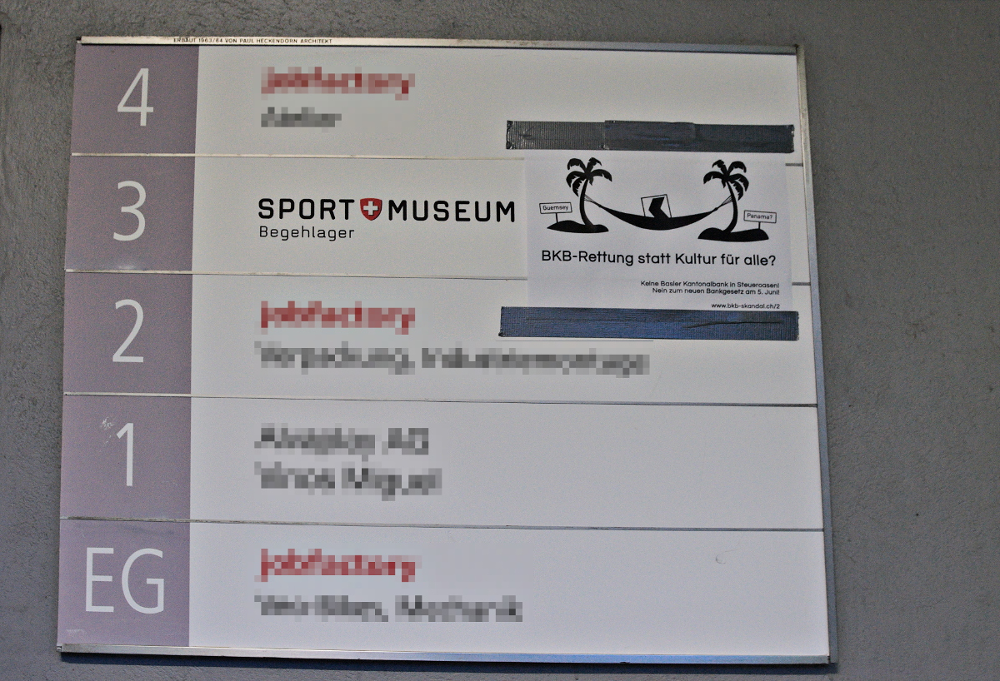
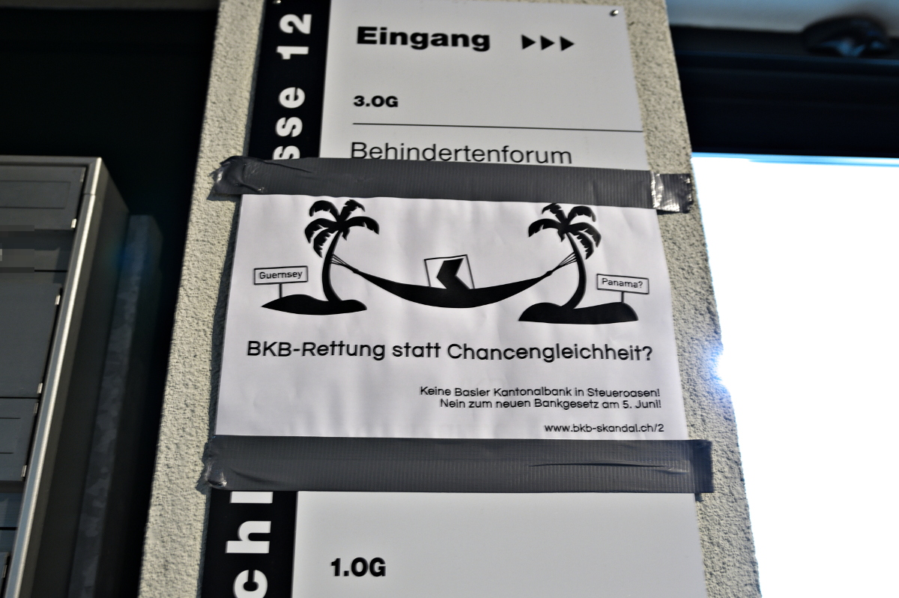
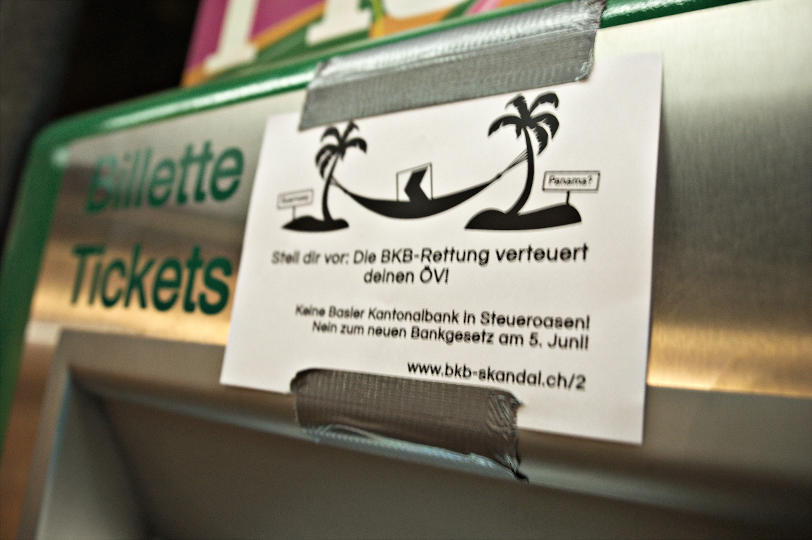
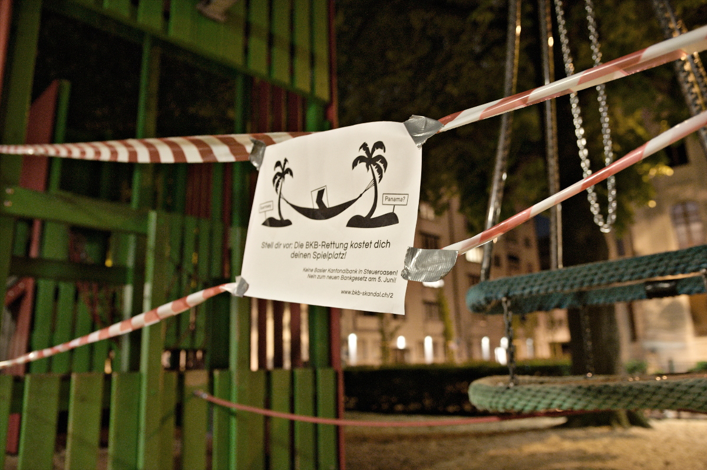
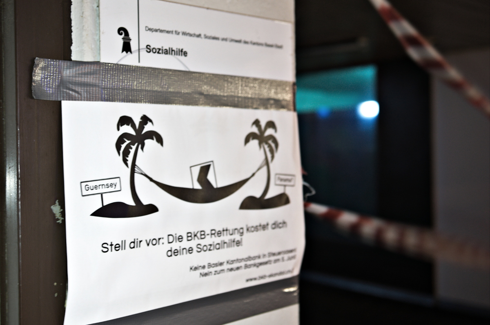
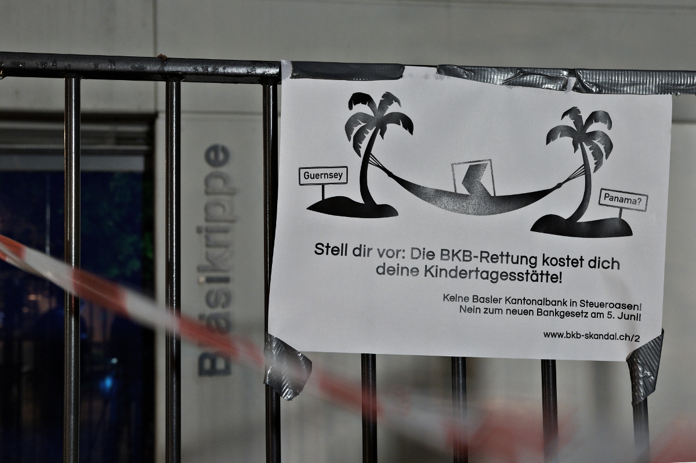

Wenn wir die Basler Kantonalbank retten müssen
Die Basler Kantonalbank hat eine Staatsgarantie vom Kanton Basel-Stadt. Wenn aufgrund der vielen teuren Skandalen rund um die Bank tatsächlich eine BKB-Rettung bevorsteht, sind es auf alle Fälle wir Einwohner*innen, die die Zeche bezahlen müssen. Das heisst nicht nur, dass einige Dinge teurer werden, sondern dass auch öffentliche Leistungen abgebaut werden müssten. Mit den folgenden Beispielen zeigen wir auf, worauf wir nach einer BKB-Rettung verzichten müssten.
Deshalb ist es wichtig, dass unsere Kantonalbank den Bedürfnissen der Menschen dient und keine weiteren Skandale produziert. Das neue Gesetz über die Kantonalbank, über welches wir am 5. Juni abstimmen werden, lässt der Bank weiterhin zu viel Spielraum für unethische Spekulationen und unseriöse Geschäfte und bietet somit keinen wirksamen Schutz vor weiteren Skandalen. Deshalb muss es mit einem klaren NEIN zurückgewiesen werden.
BKB-Rettung statt Sicherheit für alle?
BKB-Rettung statt Kultur für alle?

BKB-Rettung statt Chancengleichheit für alle?

Im letzten Jahr wurde die Fachstelle für Behinderte geschlossen. Das Behindertenforum versuchte mit einer Petition die Schliessung zu verhindern.
Stell dir vor: Die BKB-Rettung verteuert deinen ÖV!

Stell dir vor: Die BKB-Rettung kostet dich deinen Spielplatz!

Stell dir vor: Die BKB-Rettung kostet dich deine Sozialhilfe!

Stell dir vor: Die BKB-Rettung kostet dich deine Kindertagesstätte!
